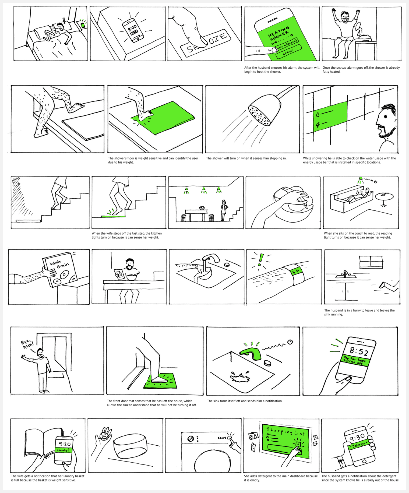
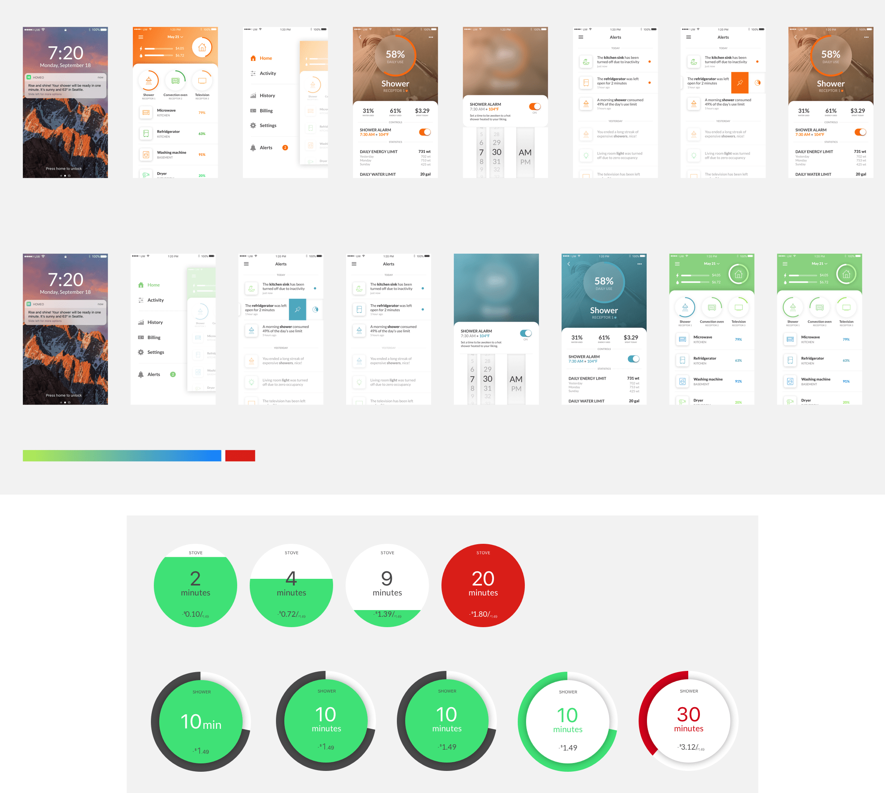
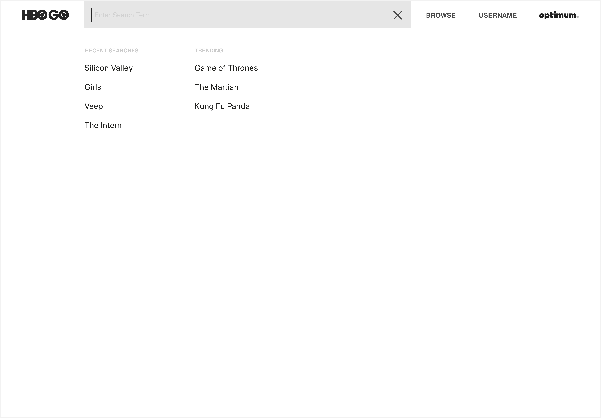
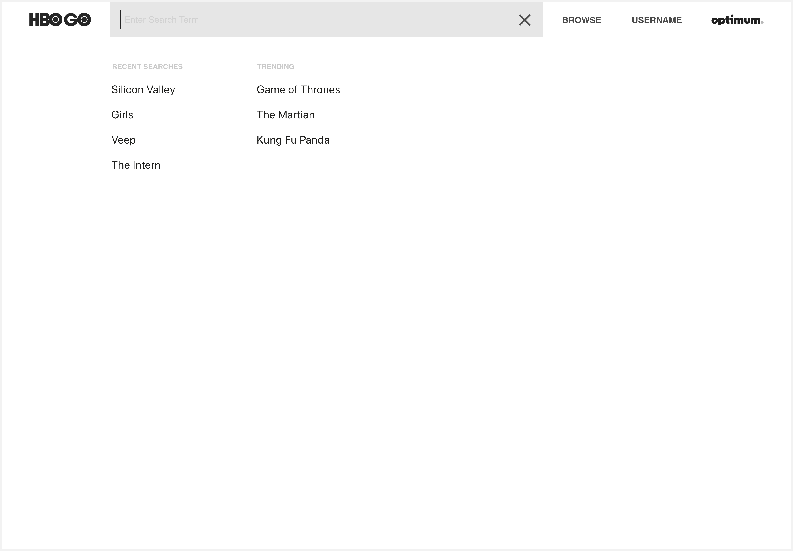

This class project was done in collaboration with Alexis Bieda and Peter Franko. The project explores modes to reduce consumption of energy and water in the house setting.

The project started by understanding current market solutions that reduce consumption. We then interviewed a family to get a grasp of the interaction space to see if we could provide technical assistance to improve the situation and reduce utility costs.
The process includes some storyboarding and defining the characteristics of our interaction system which we hoped would enable users to understand and change habits to curtail their environmental impact and utility costs.

Although our initial approach had functional ideas, our system of interfaces lacked cohesion and worked without a focused purpose. So, we started looking into the essentials and the core factors that would help the users save money and energy.
We figured that using a fixed point of reference set by the user, to determine the relative consumption level, would help them easily track their habits and give them autonomy over their progress.
The small portable screens (receptors) were designed to provide constant usage feedback to the user of a particular appliance. The appliance monitored would be suggested on the connected app through the habits that the system understands.

The designed mobile application includes onboarding that explains how the usage will be tracked, what the goal of machine learning is and how the system of interfaces can be used.
The home screen emphasizes on alerts and the appliances in the house are organized by their relative consumption. The simple menu allows for quick access to adding receptors, establishing goals and general settings.
The video demonstrates the process of using Homeo and how it can help guide users to a more environmentally friendly and cost-effective life.


 
